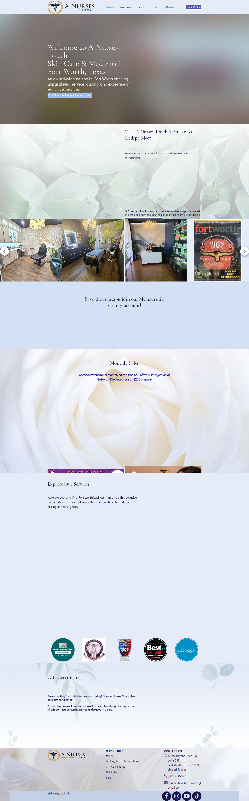

The redesign concept
On the left, their current website, captured live in October 2026. On the right, the concept: a nurse-led medspa with 500+ five-star reviews deserves a site that looks like it. Drag the handle.
Drag to compare
The "before" is a real screenshot of anursestouchfortworth.com, captured October 2026.The "after" is this concept, rendered in the same viewport.
The full before
A real full-page capture. Notice the blurred stock-style hero, the tiny buttons, and how far a visitor must scroll before finding a reason to trust or book.

Captured live via headless Chromium, October 2026, desktop 1440px.
The walkthrough
The old hero is a blurred gradient with two small buttons. The new one is cinematic video, a headline with a point of view ("Great skin, minus the guesswork"), and the $50 first-timer offer right where eyes land.
500+ five-star reviews, three straight Face of the Industry awards, and the nurse-led difference now sit in a strip directly under the hero, instead of buried three screens down.
Their menu has fourteen services. New visitors freeze. Three quick questions now route each person to the right page, no email capture, no pressure.
Four dedicated service pages carry their actual pricing: $650 filler syringes, $250 Hydrafacials, the $775 Glow Up package, laser bundle discounts. Transparent pricing was always their policy; now the site shows it.
The owner is a three-time Face of the Industry winner who answers texts on weekends. That story now anchors the homepage with her real magazine feature, instead of hiding on a team page.
Real treatment rooms, real award badges, real magazine features, pulled from their own site and gallery, presented in a gallery instead of compressed into a template carousel.
(682) 200-3278 appears in the nav, every hero, every CTA band, and the footer. The old site makes visitors hunt for it.